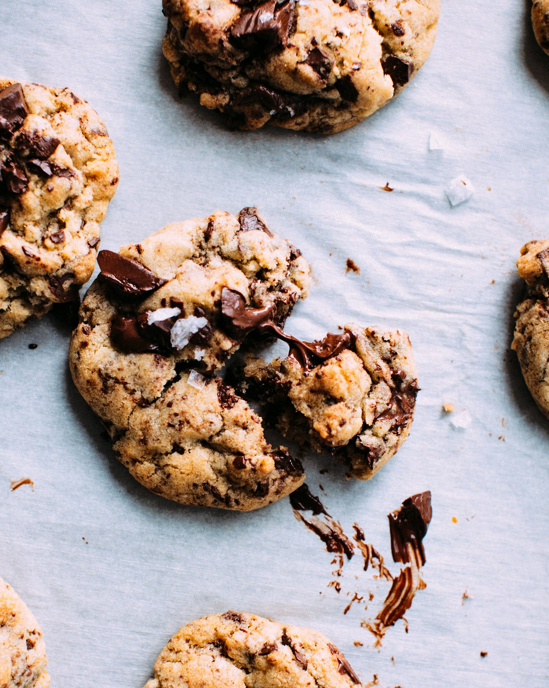

SMALL BATCHES. SWEET POSSIBILITIES.
Something sweet,
close to home.
Meet Raven's Whisk Cottage Bakery — a mother-and-daughter cottage bakery in Odenton, Maryland.
Explore the sweet sideCookies, cupcakes, cakes, pies & cake pops.

LOCAL ROOTS
A family story.
A familiar comfort.
Raven’s Whisk describes itself as a locally owned, mother-and-daughter bakery, creating small-batch treats from home.
From an everyday cookie craving to a celebration cake, start a conversation with the bakery about what you have in mind. Their public Nextdoor page is the place to explore their story and latest updates.
Meet the bakery on Nextdoor ↗THE SWEET SIDE
A little joy, in every shape.
Cookies & cupcakes
Small treats for sharing, gifting or simply making an ordinary day feel special.
Cakes & cake pops
Have a celebration in mind? Ask the bakery about designs, quantities and available dates.
Pies & more
Explore the bakery’s public updates, then get in touch to find out what is baking.
Offerings are based on the bakery’s public posts. Confirm current flavors, prices, ingredients and availability directly.
LET’S TALK TREATS
Your next sweet idea
starts with hello.
Tell the bakery your occasion, preferred treats and date. Arrange the details directly with their team.
Raven's Whisk Cottage Bakery
Odenton, Maryland
ravenswhiskbakery@gmail.comVisit the bakery on Facebook ↗Contact links open the bakery’s published channels. This concept does not accept orders, payments or personal information.